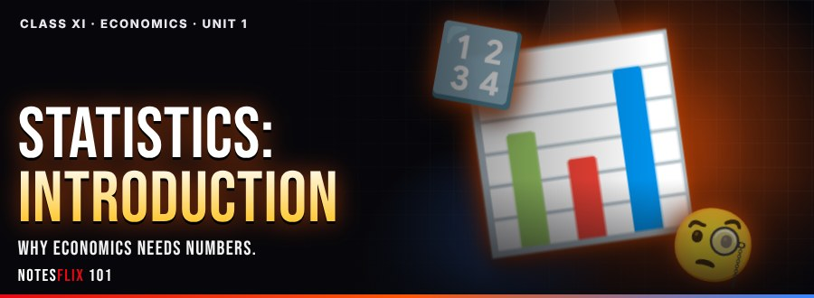
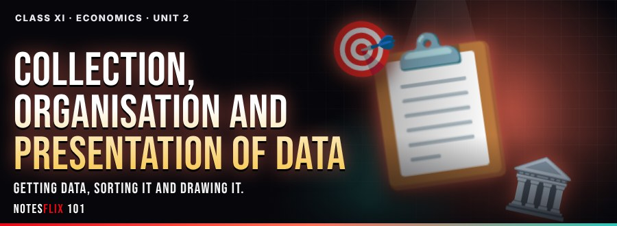
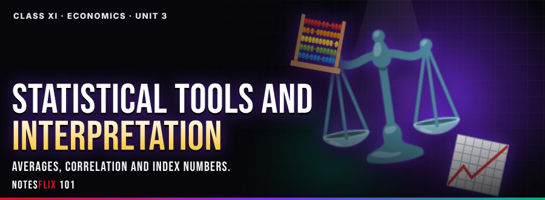
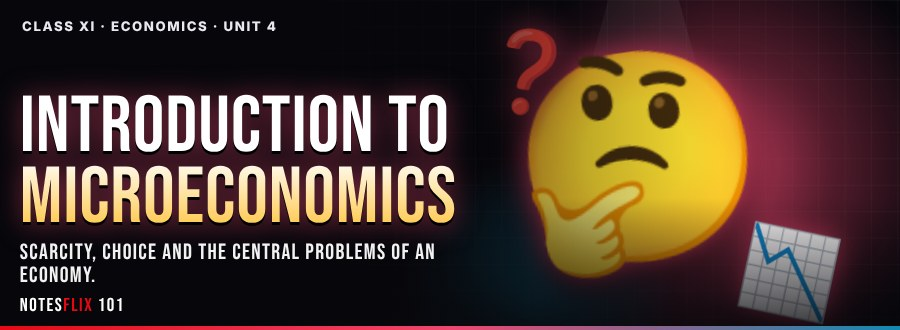
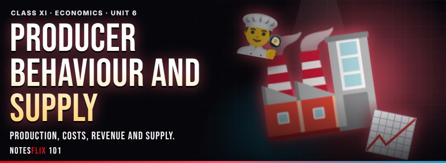
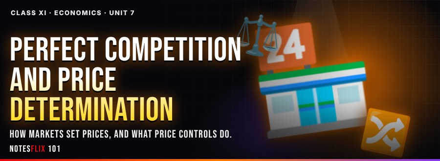

Class 11 Economics Notes
Interactive CBSE Class 11 Economics notes from Notesflix 101. They follow the CBSE syllabus and NCERT textbook for Class 11. Each chapter is broken into short parts with easy explanations, picture stories, flash cards, quizzes and board-style exam questions with model answers. All 20 parts open with a password from Notesflix 101.
Chapters

Unit 1: Statistics: Introduction
Why economics needs numbers.
- Meaning, Scope and Importance of StatisticsPASSWORD — Story, animations, 3D board, simulations and board-exam practice on meaning, scope, functions and importance of statistics in economics. (25 min)

Unit 2: Collection, Organisation and Presentation of Data
Getting data, sorting it and drawing it.
- Collection of Data (Part 1)PASSWORD — Story, animations, 3D board, simulations and board-exam practice on primary and secondary data, methods of collecting data, sampling. (25 min)
- Organisation of Data (Part 2)PASSWORD — Story, animations, 3D board, simulations and board-exam practice on meaning and types of variables, frequency distribution. (25 min)
- Tables and Diagrams (Part 3)PASSWORD — Story, animations, 3D board, simulations and board-exam practice on tabular presentation, bar diagrams and pie diagrams. (25 min)
- Frequency Diagrams and Graphs (Part 4)PASSWORD — Story, animations, 3D board, simulations and board-exam practice on histogram, polygon and ogive, arithmetic line graphs (time series). (25 min)

Unit 3: Statistical Tools and Interpretation
Averages, correlation and index numbers.
- Arithmetic Mean (Part 1)PASSWORD — Story, animations, 3D board, simulations and board-exam practice on arithmetic mean: direct, assumed mean, step deviation, economic interpretation. (25 min)
- Median and Mode (Part 2)PASSWORD — Story, animations, 3D board, simulations and board-exam practice on median, mode. (25 min)
- Correlation (Part 3)PASSWORD — Story, animations, 3D board, simulations and board-exam practice on meaning and properties, scatter diagram, Karl Pearson's method, Spearman's rank correlation. (25 min)
- Index Numbers (Part 4)PASSWORD — Story, animations, 3D board, simulations and board-exam practice on meaning and types: WPI, CPI, IIP, uses; inflation and index numbers, simple aggregative method. (25 min)

Unit 4: Introduction to Microeconomics
Scarcity, choice and the central problems of an economy.
- Central Problems and the PPCPASSWORD — Story, animations, 3D board, simulations and board-exam practice on micro vs macro; positive vs normative, central problems: what, how, for whom, production possibility frontier and opportunity cost. (25 min)
Unit 5: Consumer's Equilibrium and Demand
How a buyer chooses, and what moves demand.
- Utility Analysis (Part 1)PASSWORD — Story, animations, 3D board, simulations and board-exam practice on utility, marginal utility, law of diminishing MU, consumer's equilibrium with MU analysis. (25 min)
- Indifference Curve Analysis (Part 2)PASSWORD — Story, animations, 3D board, simulations and board-exam practice on budget set and budget line, indifference curve and map, consumer's equilibrium. (25 min)
- Demand (Part 3)PASSWORD — Story, animations, 3D board, simulations and board-exam practice on demand, market demand, determinants, demand schedule and curve, movement along vs shift. (25 min)
- Price Elasticity of Demand (Part 4)PASSWORD — Story, animations, 3D board, simulations and board-exam practice on factors affecting elasticity, percentage-change method, total expenditure method. (25 min)

Unit 6: Producer Behaviour and Supply
Production, costs, revenue and supply.
- Production Function (Part 1)PASSWORD — Story, animations, 3D board, simulations and board-exam practice on short run and long run, TP, AP, MP, returns to a factor. (25 min)
- Cost (Part 2)PASSWORD — Story, animations, 3D board, simulations and board-exam practice on TC, TFC, TVC, AC, AFC, AVC, MC and relationships. (25 min)
- Revenue and Producer's Equilibrium (Part 3)PASSWORD — Story, animations, 3D board, simulations and board-exam practice on TR, AR, MR and relationships, producer's equilibrium MR = MC. (25 min)
- Supply and Elasticity of Supply (Part 4)PASSWORD — Story, animations, 3D board, simulations and board-exam practice on supply, determinants, schedule, curve, movement vs shift, price elasticity of supply. (25 min)

Unit 7: Perfect Competition and Price Determination
How markets set prices, and what price controls do.
- Perfect Competition and Market Equilibrium (Part 1)PASSWORD — Story, animations, 3D board, simulations and board-exam practice on features of perfect competition, market equilibrium, effects of shifts in demand and supply. (25 min)
- Price Ceiling and Price Floor (Part 2)PASSWORD — Story, animations, 3D board, simulations and board-exam practice on price ceiling, price floor. (25 min)
Frequently asked questions
Are the Class 11 Economics notes free?
All 20 parts open with a password from Notesflix 101.
Which syllabus do these Class 11 Economics notes follow?
They follow the CBSE syllabus and NCERT textbook for Class 11. Every chapter is split into short interactive parts with simple explanations, flash cards, quizzes and board-style exam questions with model answers.
How many chapters are covered?
7 chapters: Statistics: Introduction; Collection, Organisation and Presentation of Data; Statistical Tools and Interpretation; Introduction to Microeconomics; Consumer's Equilibrium and Demand; Producer Behaviour and Supply; Perfect Competition and Price Determination.
Is there a practice test for Class 11 Economics?
Yes. The Class 11 Economics Practice Marathon has 492 multiple-choice questions taken from the notes: a weekly marathon (30 questions, 20 minutes, the same set for everyone that week), a 10-question sprint, a 100-question mega marathon and chapter practice. A free sample is open to all; the full bank opens with the subject password.
How do I get the password for locked notes?
Email support@notesflix101.com with your name, class, school and the Gmail ID you sign in with. The same password opens every locked Economics note.